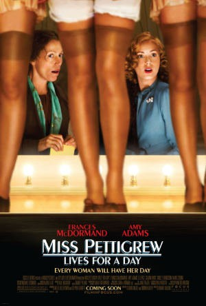

#6517 Miss Pettigrews großer Tag
Alternativ: Miss Pettigrew Lives for a Day
 
 IMDB-Wertung: 7.1 / 10
IMDB-Wertung: 7.1 / 10  Metascore: 0
Metascore: 0 
War threatens London as Miss Pettigrew, a destitute governess, filches a client's card from her agency and presents herself at the door. A singer named Delysia Lafosse wants a social secretary as she seeks a West End role by sleeping with a feckless producer in the bed of Nick, a smarmy nightclub owner with whom she also dallies. She ignores Michael, her piano player, who loves her and has tickets for New York on the Queen Mary. Miss Pettigrew's job is to make sure Delysia gets the part. Over 24 hours, Miss Pettigrew is also called upon to help an ambitious and unfaithful fashion editor patch things up with her older fiancé, a lingerie designer. Has Miss Pettigrew found her calling?
Jahr: 2008
Dauer: 91 Minuten
FSK: 0
Land: England Studio: UFATonspuren: DD5.1 - ,
Untertitel:
Auflösung: 1080p (1920x816) Größe: 6307 MB
Genre: Komödie, Liebe
Regisseur: Bharat Nalluri
Drehbuch: David Magee
Soundtrack:
Darsteller:
 Amy Adams als Delysia
Amy Adams als Delysia Christina Cole als Charlotte Warren
Christina Cole als Charlotte Warren- Stephanie Cole als Miss Holt
- Beatie Edney als Mrs. Brummegan
 Shirley Henderson als Edythe
Shirley Henderson als Edythe Ciarán Hinds als Joe
Ciarán Hinds als Joe Frances McDormand als Miss Pettigrew
Frances McDormand als Miss Pettigrew Lee Pace als Michael
Lee Pace als Michael- Tom Payne als Phil
 Tim Potter als Nightclub Patron
Tim Potter als Nightclub Patron- Matt Ryan als Gerry
 Mark Strong als Nick
Mark Strong als Nick- Mo Zinal als Lenny
- Alana O'Neill als Society Lady , uncredited
- Hester Ruoff als Edythe's Friend , uncredited
- Andrew Shire als Charlottes Man , uncredited
- David Alexander als Chestnut Seller
- Clare Clifford als Margery
- Sarah Kants als Annabel Darlington
- Sally Leonard als Woman at Train Station
- Katy Murphy als Miss Holt's Assistant
- James Fiddy als Party-goer , uncredited
- Natasha Jenssen als Secretary , uncredited
- Silvia Lombardo als Nightclub Patron's Lover , uncredited
- Chris Mansfield als Prison Guard , uncredited
- Pam Rose als Society Lady , uncredited
- Leonard Silver als Butler , uncredited
- Pauline Stone als Society Lady , uncredited
- Richard Upton als Head Silver Service Waiter , uncredited
- Ben Wood als Fan , uncredited
Datei: X:\2008(G-M)\Miss Pettigrews großer Tag (2008, FSK0, 1920x816).mkv seit 05.07.2017
Festplatte: HD 2008(G-Z)-2009(A-F)
 Es gibt insgesamt 73 Filme in der Gruppe '2008(G-M)'
Es gibt insgesamt 73 Filme in der Gruppe '2008(G-M)'